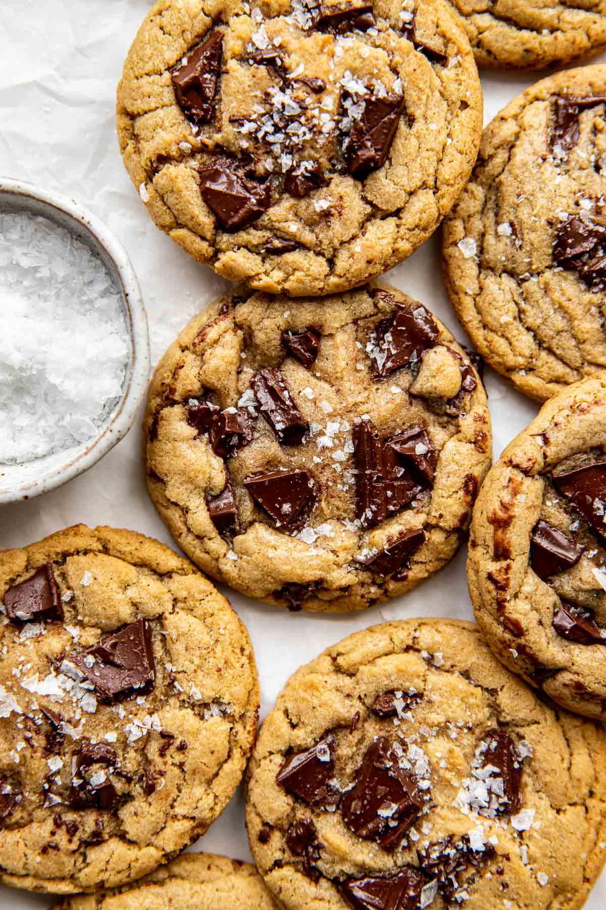

Return to Home
Brown Butter Cookies

Description
Some tasty cookies for when you're on your cheat day. They lowkey taste nutty which I didn't know cause I didn't add nuts but apparently brown butter does that.
Ingredients
- 1 cup unsalted butter
- 1 cup brown sugar
- 1/2 cup white sugar
- 2 eggs
- 2 tsp vanilla extract
- 2.5 cup all purpose flower
- 1 tsp baking soda
- 1/2 tsp baking powder
- 1 tsp salt
- 1 cup chocolate chips
Recipe
- Brown the butter in a saucepan over medium heat until golden and nutty, then cool 15ish minutes.
- Mix browned butter with both sugars until smooth.
- Beat in eggs and vanilla.
- Stir in flour, baking soda, baking powder, and salt until just combined.
- Fold in chocolate chips.
- Preheat oven to 350°F
- Scoop dough onto a lined baking sheet.
- Bake 10–12 minutes until edges are golden.
- Cool on the pan 5 minutes, then transfer to a rack.
- Eat em probably